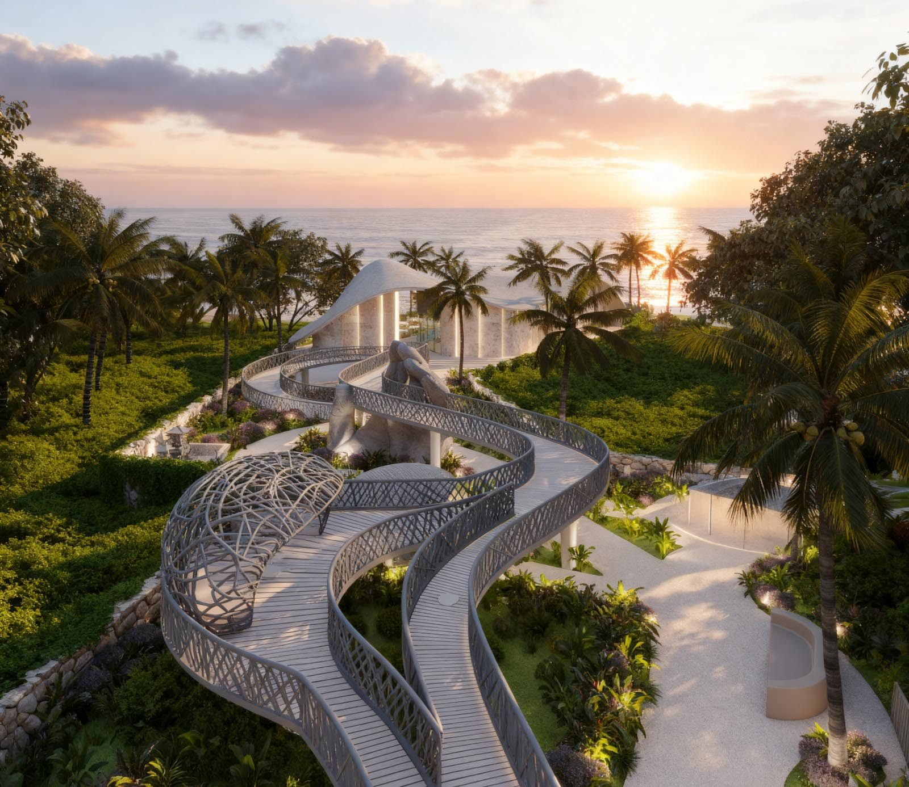
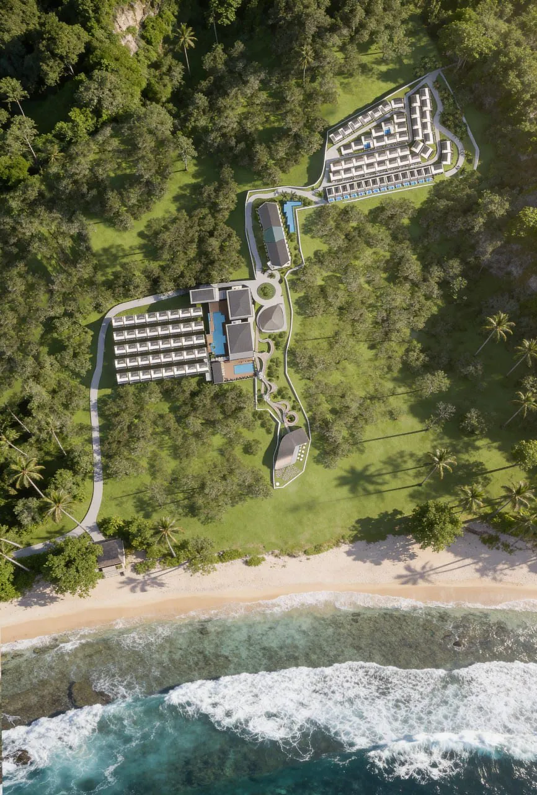
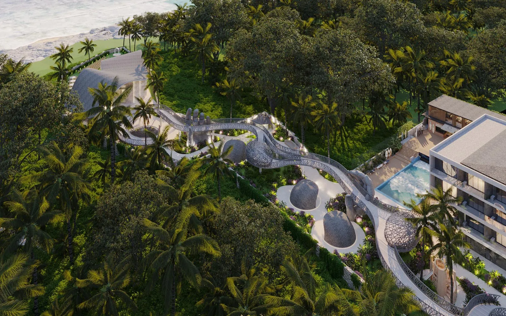
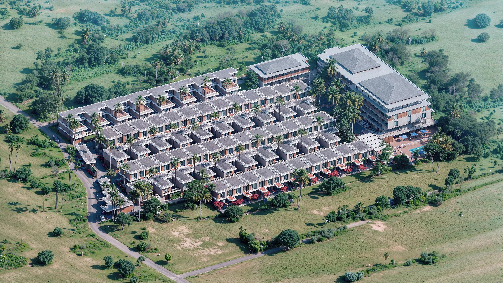
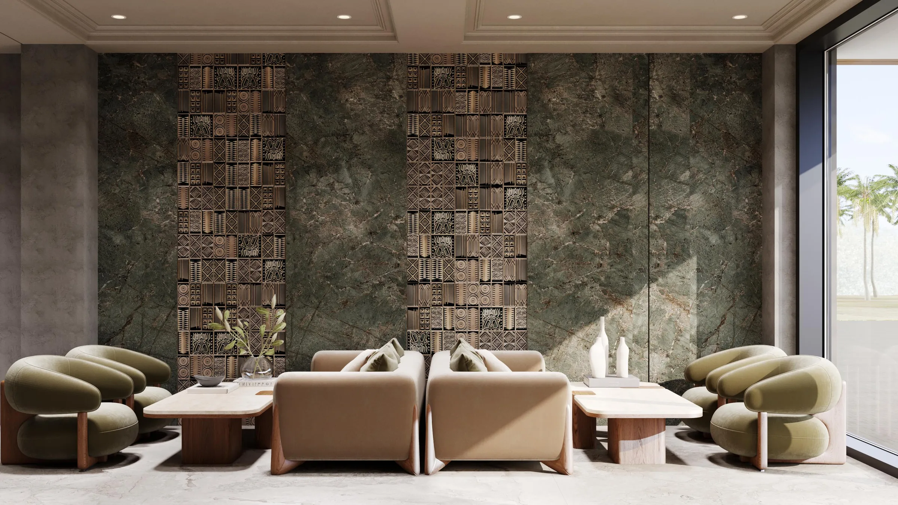

Services engaged
The Zenith services used on Solvyn City are to be confirmed.

Our projects
Island living. A world of experiences.
The project
Solvyn City combines villas and apartments with dining, a café, spa and wellness, event spaces and river surfing. Architecture, tropical gardens and water bring these experiences together, creating a destination for staying, gathering and exploring at an unhurried pace.
Zenith’s involvement
Zenith’s work spans the villas and apartments, restaurant, café, spa, hall and river surf. The detailed service scope and deliverables will be confirmed.
The Zenith services used on Solvyn City are to be confirmed.
Key responsibilities, support and deliverables are to be confirmed.
Zenith Hospitality is listed among the partners on Solvyn City’s official website. Project milestones and appointment details are to be confirmed.
In pictures




Your next chapter
Have a hospitality project in mind? Start a conversation with Zenith.
Discuss Your ProjectBack to projects